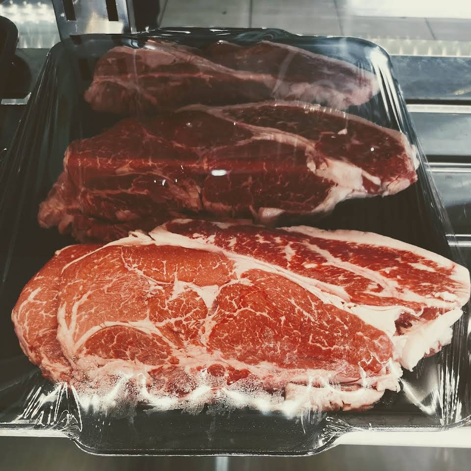
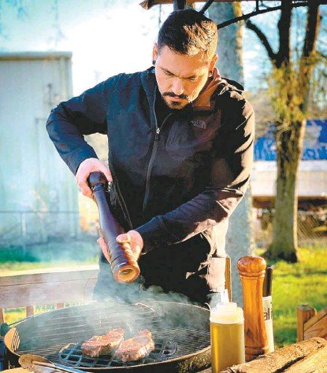

¿Quienes somos?
El restaurante esta ubicado dentro de la colonia bosques de africa, cerca de la FES Aragón, apesar de haber sido inaugurado en el 2020 ya contamos con 2 estrellas michelin. El restaurante esta pensado para aquellas personas amantes de la comida asada, por esta razón nuestro platillo principal es carne de res asada, así que ven y prueba uno de nuestros cortes de carne de entre los 12 diferentes tipos de cortecon los que contamos.
Neri & Grill tambien ha tenido el placer de contar con la visita de Oscar Meza, de la capital.
Oscar Meza preparando sus alimentos.